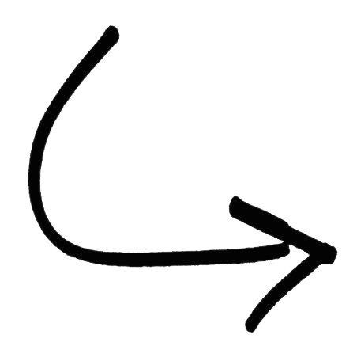

Mirela Rosca
chi sono
Ciao! Sono una ragazza di 22 anni di Roma.
Mi definisco una persona intraprendente e organizzata,
mi piace avere il controllo su ciò che
faccio e sugli eventi che mi circondano.
Sono una persona molto creativa; la mia
vena creativa
si esprime in modo particolare attraverso i miei hobby:
adoro lavorare a maglia e all'uncinetto.
Queste sono attività che richiedono una grandissima precisione
e costanza, ed è proprio durante queste sfide che provo una grande
soddisfazione nel trasformare le idee dalla mia mente in realtà.
Le mie competenze
-
Capacità di progettare e codificare pagine web partendo da zero utilizzando HTML, CSS, JavaScript e React Js. Competenza nell'uso di framework come TailwindCss.
-
Esperienza nell' utilizzo di Git, per la gestione del controllo di versione dei progetti.
-
Buona comprensione dei concetti di design 'mobile first', inclusa l'ottimizzazione dell'interfaccia utente (UI) per dispositivi mobili e l'implementazione di API per integrare funzionalità esterne e migliorare l'interattività.
Le mie Skill
HTML5 & CSS3 JavaScript ReactJs
SASS TailwindCss Bootstrap Git
Figma Illustrator Photoshop
always
learning...
La mia formazione
Scienze matematiche per
l’intelligenza artificiale
Sapienza - Università di Roma
2024 - 2027
Liceo Scientifico
Cambridge - Farnesina
2016-2021

i'm working hard on it
Le mie esperienze
NiKi Tour - Tour Operator
[Roma, 03.2024 - 09.2024]
Gestione e Problem Solving Coordinamento di viaggi personalizzati, esperienza nella gestione delle relazioni sia B2B
che B2C. Risoluzione efficiente delle problematiche di viaggio e delle esigenze dei clienti, migliorando la soddisfazione
del cliente e la fidelizzazione.
Insegnante di Inglese
[Roma, 2021 - 2024]
Educazione Personalizzata e Comunicazione Efficace Lezioni di inglese a bambini, inclusi quelli con DSA, adattando
metodi didattici alle esigenze individuali. Sviluppo di eccellenti abilità comunicative e di ascolto, essenziali per
comprendere e rispondere alle esigenze degli studenti.
but I'd love
to gain some front-end
work experience ...